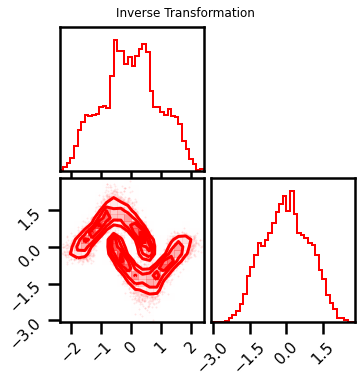
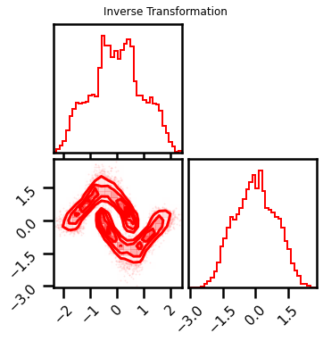

MultiScale Layers¶
# @title Install Packages
# %%capture
try:
import sys, os
from pyprojroot import here
# spyder up to find the root
root = here(project_files=[".here"])
# append to path
sys.path.append(str(root))
except ModuleNotFoundError:
import os
os.system("pip install chex")
os.system("pip install git+https://github.com/IPL-UV/rbig_jax.git#egg=rbig_jax")
# jax packages
import jax
import jax.numpy as jnp
from jax.config import config
# import chex
config.update("jax_enable_x64", True)
import chex
import numpy as np
from functools import partial
# library functions
from rbig_jax.data import get_classic
from rbig_jax.plots import plot_joint, plot_joint_prob, plot_info_loss
KEY = jax.random.PRNGKey(123)
# logging
import tqdm
import wandb
# plot methods
import matplotlib.pyplot as plt
import seaborn as sns
import corner
from IPython.display import HTML
sns.reset_defaults()
sns.set_context(context="poster", font_scale=0.7)
%load_ext lab_black
%matplotlib inline
%load_ext autoreload
%autoreload 2
INFO:tensorflow:Enabling eager execution
INFO:tensorflow:Enabling v2 tensorshape
INFO:tensorflow:Enabling resource variables
INFO:tensorflow:Enabling tensor equality
INFO:tensorflow:Enabling control flow v2
WARNING:absl:No GPU/TPU found, falling back to CPU. (Set TF_CPP_MIN_LOG_LEVEL=0 and rerun for more info.)
Demo Data¶
import pytorch_lightning as pl
from torchvision import transforms
from sklearn.datasets import fetch_openml
from sklearn.model_selection import train_test_split
from torch.utils.data import DataLoader
from rbig_jax.data import GenericDataset
from pl_bolts.datamodules import CIFAR10DataModule
dm = CIFAR10DataModule(os.getcwd(),)
from torchvision.datasets import CIFAR10
%%time
dataset = CIFAR10(os.getcwd(), download=True, train=True)
Files already downloaded and verified
CPU times: user 1.23 s, sys: 215 ms, total: 1.44 s
Wall time: 1.45 s
%%time
X_original, y_original = fetch_openml("cifar_10", version=1, return_X_y=True, as_frame=False)
CPU times: user 1min 5s, sys: 640 ms, total: 1min 6s
Wall time: 1min 6s
len(dataset)
50000
from torch.utils.data import DataLoader, random_split
train_ds, val_ds = random_split(dataset, [45000, 5000])
train_ds[0]
(<PIL.Image.Image image mode=RGB size=32x32 at 0x7FAE146F9310>, 2)
seed = 123
rng = np.random.RandomState(seed)
X = dataset.data.astype(np.float32)
X += rng.rand(*X.shape)
X_train = X / 256.0
data = X_train[:10_000]
data.shape
(10000, 32, 32, 3)
Image Shapes¶
from rbig_jax.custom_types import ImageShape
image_shape = ImageShape(C=3, H=32, W=32)
plt.imshow(data[0])
<matplotlib.image.AxesImage at 0x7fae148cd2b0>
from rbig_jax.plots import plot_image_grid
plot_image_grid(data, None)
(<Figure size 720x720 with 50 Axes>,
<mpl_toolkits.axes_grid1.axes_grid.ImageGrid at 0x7fade805f520>)
Model Inputs¶
from rbig_jax.transforms.reshape import flatten_image, unflatten_image
X = flatten_image(data, image_shape, batch=True)
X = jnp.array(X, dtype=jnp.float64)
X.shape
(10000, 3072)
plot_image_grid(X, image_shape)
(<Figure size 720x720 with 50 Axes>,
<mpl_toolkits.axes_grid1.axes_grid.ImageGrid at 0x7fadb91e7070>)
Model - Naive (N x D)¶
Initialize Layers¶
from rbig_jax.transforms.parametric.mixture.logistic import InitMixtureLogisticCDF
from rbig_jax.transforms.logit import InitLogitTransform
from rbig_jax.transforms.parametric.householder import InitHouseHolder
# parameters
n_components = 20
n_features = 2
shape = (2,)
key = jax.random.PRNGKey(123)
init_method = "gmm"
init_mixcdf_f = InitMixtureLogisticCDF(
n_components=n_components, init_method=init_method
)
# init_mixcdf_f = InitMixtureGaussianCDF(
# n_components=n_components, init_method=init_method
# )
# Logit Transformation
init_logit_f = InitLogitTransform()
# init_logit_f = InitInverseGaussCDF()
# Householder Transformation
n_reflections = 10
method = "random"
# initialize init function
init_hh_f = InitHouseHolder(n_reflections=n_reflections, method=method)
Initialize Layers with Multiscale¶
Scales
1
2
4
8
16
32
from rbig_jax.transforms.multiscale import MultiScaleBijectorChain
from rbig_jax.transforms.reshape import init_scale_function
rand_idx = jax.random.permutation(key, jnp.arange(100))
jax.random.permutation(rng, X_g)[:5_000].shape
(5000, 3072)
# Layer Params
n_layers = 2
filters = [(2, 2), (4, 4), (8, 8,), (16, 16), (32, 32)]
n_filters = len(filters)
bijectors = []
rng, layer_rngs = jax.random.split(KEY, num=2)
X_g = X[:10_000].copy()
n_sub_samples = 100
# subset data
X_g_subset = jax.random.permutation(rng, X_g)[:n_sub_samples]
# Plotting
plot_layers = False
plot_intermediates = False
if plot_layers:
plot_image_grid(X_g, image_shape)
# fig = corner.corner(X_g, color="red", hist_bin_factor=2)
with tqdm.tqdm(filters) as pbar:
for i_filter in pbar:
pbar.set_description(
f"Filter: {i_filter} - Layer: {i} - X: {X_g_subset.shape}- Initializing MixCDF"
)
# split keys
layer_rngs, *ilayer_rngs = jax.random.split(layer_rngs, num=n_layers + 1)
# print(len(layer_rings))
ms_bijectors = []
ms_reshape = init_scale_function(i_filter, image_shape, batch=False)
X_g_subset = ms_reshape.forward(X_g_subset)
for i, irng in enumerate(ilayer_rngs):
# ======================
# MIXTURECDF
# ======================
# create keys for all inits
pbar.set_description(
f"Filter: {i_filter} - Layer: {i} - X: {X_g_subset.shape}- Initializing MixCDF"
)
irng, icdf_rng = jax.random.split(irng, 2)
# intialize bijector and transformation
X_g_subset, layer = init_mixcdf_f.bijector_and_transform(
inputs=X_g_subset, rng=icdf_rng, n_features=X_g_subset.shape[1]
)
# plot data
if plot_layers and plot_intermediates:
fig = corner.corner(X_g_subset, color="red", hist_bin_factor=2)
# add bijector to list
ms_bijectors.append(layer)
# ======================
# LOGIT
# ======================
pbar.set_description(
f"Filter: {i_filter} - Layer: {i} - X: {X_g_subset.shape}- Logit Transform"
)
# intialize bijector and transformation
X_g_subset, layer = init_logit_f.bijector_and_transform(inputs=X_g_subset)
ms_bijectors.append(layer)
# plot data
if plot_layers and plot_intermediates:
fig = corner.corner(X_g_subset, color="red", hist_bin_factor=2)
# ======================
# HOUSEHOLDER
# ======================
pbar.set_description(
f"Filter: {i_filter} - Layer: {i} - X: {X_g_subset.shape}- HouseHolder"
)
# create keys for all inits
irng, hh_rng = jax.random.split(irng, 2)
# intialize bijector and transformation
X_g_subset, layer = init_hh_f.bijector_and_transform(
inputs=X_g_subset, rng=hh_rng, n_features=X_g_subset.shape[1]
)
print(layer.V.shape)
ms_bijectors.append(layer)
# plot data
if plot_layers:
plot_image_grid(X_g_subset, image_shape)
# fig = corner.corner(X_g, color="red", hist_bin_factor=2)
# initialize multiscale bijector
ms_bijector_chain = MultiScaleBijectorChain(
bijectors=ms_bijectors, filter_shape=i_filter, image_shape=image_shape
)
bijectors.append(ms_bijector_chain)
X_g_subset = ms_reshape.inverse(X_g_subset)
Filter: (2, 2) - Layer: 1 - X: (25600, 12)- Initializing MixCDF: 0%| | 0/5 [00:07<?, ?it/s]
(10, 12)
Filter: (4, 4) - Layer: 0 - X: (6400, 48)- Initializing MixCDF: 20%|██ | 1/5 [00:14<00:56, 14.04s/it]
(10, 12)
Filter: (4, 4) - Layer: 1 - X: (6400, 48)- Initializing MixCDF: 20%|██ | 1/5 [00:25<00:56, 14.04s/it]
(10, 48)
Filter: (8, 8) - Layer: 0 - X: (1600, 192)- Initializing MixCDF: 40%|████ | 2/5 [00:36<00:56, 18.86s/it]
(10, 48)
Filter: (8, 8) - Layer: 1 - X: (1600, 192)- Initializing MixCDF: 40%|████ | 2/5 [00:48<00:56, 18.86s/it]
(10, 192)
Filter: (16, 16) - Layer: 0 - X: (400, 768)- Initializing MixCDF: 60%|██████ | 3/5 [01:01<00:43, 21.80s/it]
(10, 192)
Filter: (16, 16) - Layer: 1 - X: (400, 768)- Initializing MixCDF: 60%|██████ | 3/5 [01:12<00:43, 21.80s/it]
(10, 768)
Filter: (32, 32) - Layer: 0 - X: (100, 3072)- Initializing MixCDF: 80%|████████ | 4/5 [01:23<00:21, 21.92s/it]
(10, 768)
Filter: (32, 32) - Layer: 1 - X: (100, 3072)- Initializing MixCDF: 80%|████████ | 4/5 [01:55<00:21, 21.92s/it]
(10, 3072)
Filter: (32, 32) - Layer: 1 - X: (100, 3072)- HouseHolder: 100%|██████████| 5/5 [02:27<00:00, 29.56s/it]
(10, 3072)
GF Model¶
from rbig_jax.models.gaussflow import GaussianizationFlow
from distrax._src.distributions.normal import Normal
# init base dist
base_dist = Normal(0.0, 1.0)
# init model
gf_model = GaussianizationFlow(bijectors=bijectors, base_dist=base_dist)
Forward Transform¶
%%time
X_trans = gf_model.forward(X[:50])
CPU times: user 8.54 s, sys: 503 ms, total: 9.05 s
Wall time: 3.2 s
X_approx = gf_model.inverse(X_trans)
%%time
X_trans, X_ldj = gf_model.forward_and_log_det(X[:50])
CPU times: user 14.3 s, sys: 1.49 s, total: 15.8 s
Wall time: 4.67 s
X_trans.shape
(50, 3072)
plot_image_grid(X_trans, image_shape)
WARNING:matplotlib.image:Clipping input data to the valid range for imshow with RGB data ([0..1] for floats or [0..255] for integers).
WARNING:matplotlib.image:Clipping input data to the valid range for imshow with RGB data ([0..1] for floats or [0..255] for integers).
WARNING:matplotlib.image:Clipping input data to the valid range for imshow with RGB data ([0..1] for floats or [0..255] for integers).
WARNING:matplotlib.image:Clipping input data to the valid range for imshow with RGB data ([0..1] for floats or [0..255] for integers).
WARNING:matplotlib.image:Clipping input data to the valid range for imshow with RGB data ([0..1] for floats or [0..255] for integers).
WARNING:matplotlib.image:Clipping input data to the valid range for imshow with RGB data ([0..1] for floats or [0..255] for integers).
WARNING:matplotlib.image:Clipping input data to the valid range for imshow with RGB data ([0..1] for floats or [0..255] for integers).
WARNING:matplotlib.image:Clipping input data to the valid range for imshow with RGB data ([0..1] for floats or [0..255] for integers).
WARNING:matplotlib.image:Clipping input data to the valid range for imshow with RGB data ([0..1] for floats or [0..255] for integers).
WARNING:matplotlib.image:Clipping input data to the valid range for imshow with RGB data ([0..1] for floats or [0..255] for integers).
WARNING:matplotlib.image:Clipping input data to the valid range for imshow with RGB data ([0..1] for floats or [0..255] for integers).
WARNING:matplotlib.image:Clipping input data to the valid range for imshow with RGB data ([0..1] for floats or [0..255] for integers).
WARNING:matplotlib.image:Clipping input data to the valid range for imshow with RGB data ([0..1] for floats or [0..255] for integers).
WARNING:matplotlib.image:Clipping input data to the valid range for imshow with RGB data ([0..1] for floats or [0..255] for integers).
WARNING:matplotlib.image:Clipping input data to the valid range for imshow with RGB data ([0..1] for floats or [0..255] for integers).
WARNING:matplotlib.image:Clipping input data to the valid range for imshow with RGB data ([0..1] for floats or [0..255] for integers).
WARNING:matplotlib.image:Clipping input data to the valid range for imshow with RGB data ([0..1] for floats or [0..255] for integers).
WARNING:matplotlib.image:Clipping input data to the valid range for imshow with RGB data ([0..1] for floats or [0..255] for integers).
WARNING:matplotlib.image:Clipping input data to the valid range for imshow with RGB data ([0..1] for floats or [0..255] for integers).
WARNING:matplotlib.image:Clipping input data to the valid range for imshow with RGB data ([0..1] for floats or [0..255] for integers).
WARNING:matplotlib.image:Clipping input data to the valid range for imshow with RGB data ([0..1] for floats or [0..255] for integers).
WARNING:matplotlib.image:Clipping input data to the valid range for imshow with RGB data ([0..1] for floats or [0..255] for integers).
WARNING:matplotlib.image:Clipping input data to the valid range for imshow with RGB data ([0..1] for floats or [0..255] for integers).
WARNING:matplotlib.image:Clipping input data to the valid range for imshow with RGB data ([0..1] for floats or [0..255] for integers).
WARNING:matplotlib.image:Clipping input data to the valid range for imshow with RGB data ([0..1] for floats or [0..255] for integers).
(<Figure size 720x720 with 50 Axes>,
<mpl_toolkits.axes_grid1.axes_grid.ImageGrid at 0x7face04f1970>)
plot_image_grid(X_approx, image_shape)
(<Figure size 720x720 with 50 Axes>,
<mpl_toolkits.axes_grid1.axes_grid.ImageGrid at 0x7fac8077e400>)

from rbig_jax.transforms.block import init_default_rbig_block
# X_shape = data.shape[1:]
method = "histogram"
jitted = True
rbig_block_init = init_default_rbig_block(shape=X.shape, method=method, jitted=jitted)
Forward Transformation¶
%%time
n_demo = 10_000
X_trans, bijectors = rbig_block_init.forward_and_params(X[:n_demo])
X_trans.shape
CPU times: user 3.03 s, sys: 365 ms, total: 3.39 s
Wall time: 2.05 s
(10000, 3072)
# plot
plot_image_grid(X_trans, image_shape)
WARNING:matplotlib.image:Clipping input data to the valid range for imshow with RGB data ([0..1] for floats or [0..255] for integers).
WARNING:matplotlib.image:Clipping input data to the valid range for imshow with RGB data ([0..1] for floats or [0..255] for integers).
WARNING:matplotlib.image:Clipping input data to the valid range for imshow with RGB data ([0..1] for floats or [0..255] for integers).
WARNING:matplotlib.image:Clipping input data to the valid range for imshow with RGB data ([0..1] for floats or [0..255] for integers).
WARNING:matplotlib.image:Clipping input data to the valid range for imshow with RGB data ([0..1] for floats or [0..255] for integers).
WARNING:matplotlib.image:Clipping input data to the valid range for imshow with RGB data ([0..1] for floats or [0..255] for integers).
WARNING:matplotlib.image:Clipping input data to the valid range for imshow with RGB data ([0..1] for floats or [0..255] for integers).
WARNING:matplotlib.image:Clipping input data to the valid range for imshow with RGB data ([0..1] for floats or [0..255] for integers).
WARNING:matplotlib.image:Clipping input data to the valid range for imshow with RGB data ([0..1] for floats or [0..255] for integers).
WARNING:matplotlib.image:Clipping input data to the valid range for imshow with RGB data ([0..1] for floats or [0..255] for integers).
WARNING:matplotlib.image:Clipping input data to the valid range for imshow with RGB data ([0..1] for floats or [0..255] for integers).
WARNING:matplotlib.image:Clipping input data to the valid range for imshow with RGB data ([0..1] for floats or [0..255] for integers).
WARNING:matplotlib.image:Clipping input data to the valid range for imshow with RGB data ([0..1] for floats or [0..255] for integers).
WARNING:matplotlib.image:Clipping input data to the valid range for imshow with RGB data ([0..1] for floats or [0..255] for integers).
WARNING:matplotlib.image:Clipping input data to the valid range for imshow with RGB data ([0..1] for floats or [0..255] for integers).
WARNING:matplotlib.image:Clipping input data to the valid range for imshow with RGB data ([0..1] for floats or [0..255] for integers).
WARNING:matplotlib.image:Clipping input data to the valid range for imshow with RGB data ([0..1] for floats or [0..255] for integers).
WARNING:matplotlib.image:Clipping input data to the valid range for imshow with RGB data ([0..1] for floats or [0..255] for integers).
WARNING:matplotlib.image:Clipping input data to the valid range for imshow with RGB data ([0..1] for floats or [0..255] for integers).
WARNING:matplotlib.image:Clipping input data to the valid range for imshow with RGB data ([0..1] for floats or [0..255] for integers).
WARNING:matplotlib.image:Clipping input data to the valid range for imshow with RGB data ([0..1] for floats or [0..255] for integers).
WARNING:matplotlib.image:Clipping input data to the valid range for imshow with RGB data ([0..1] for floats or [0..255] for integers).
WARNING:matplotlib.image:Clipping input data to the valid range for imshow with RGB data ([0..1] for floats or [0..255] for integers).
WARNING:matplotlib.image:Clipping input data to the valid range for imshow with RGB data ([0..1] for floats or [0..255] for integers).
WARNING:matplotlib.image:Clipping input data to the valid range for imshow with RGB data ([0..1] for floats or [0..255] for integers).
(<Figure size 720x720 with 50 Axes>,
<mpl_toolkits.axes_grid1.axes_grid.ImageGrid at 0x7f9a2c68c040>)
Inverse Transformation¶
from rbig_jax.transforms.base import BijectorChain
rbig_block = BijectorChain(bijectors=bijectors)
%%time
X_approx = rbig_block.inverse(X_trans)
chex.assert_tree_all_close(X_approx, X[:n_demo])
CPU times: user 40.8 s, sys: 6.37 s, total: 47.2 s
Wall time: 6.77 s
plot_image_grid(X_approx, image_shape)
(<Figure size 720x720 with 50 Axes>,
<mpl_toolkits.axes_grid1.axes_grid.ImageGrid at 0x7f9a205d95b0>)
MultiScale RBIG Init¶
Initialization¶
from rbig_jax.transforms.multiscale import MultiScaleRBIGBlockInit
# X_shape = data.shape[1:]
method = "histogram"
jitted = True
rbig_block_init = init_default_rbig_block(shape=X.shape, method=method, jitted=jitted)
X[:n_demo].shape
(10000, 3072)
# from rbig_jax.transforms.rotation import compute_projection
# _, _, VT = jnp.linalg.svd(X[:n_demo], full_matrices=True, compute_uv=True)
filter_shape = (4, 4)
# init MS Block
rbig_ms_block_init = MultiScaleRBIGBlockInit(
init_functions=rbig_block_init.init_functions,
filter_shape=filter_shape,
image_shape=image_shape,
)
Forward & Inverse Transform¶
%%time
n_demo = 10_000
# forward transformation (with bijector)
X_trans, ms_bijectors = rbig_ms_block_init.forward_and_params(X[:n_demo])
# inverse transformation
X_approx = ms_bijectors.inverse(X_trans)
chex.assert_tree_all_close(X[:n_demo], X_approx)
CPU times: user 47.7 s, sys: 13.4 s, total: 1min 1s
Wall time: 13.3 s
# plot_image_grid(X_trans, image_shape)
Training¶
from rbig_jax.training.iterative import train_info_loss_model
# define training params
verbose = True
n_layers_remove = 50
interval = 10
# run iterative training
X_g, rbig_model_info = train_info_loss_model(
X=X[:n_demo],
rbig_block_init=rbig_ms_block_init,
loss=None,
verbose=verbose,
interval=interval,
n_layers_remove=n_layers_remove,
)
Layer 10 - Cum. Info Reduction: 9595.806 - Elapsed Time: 85.6566 secs
Layer 20 - Cum. Info Reduction: 9608.986 - Elapsed Time: 171.2685 secs
Layer 30 - Cum. Info Reduction: 9616.180 - Elapsed Time: 256.8861 secs
Layer 40 - Cum. Info Reduction: 9621.025 - Elapsed Time: 342.8239 secs
Layer 50 - Cum. Info Reduction: 9627.247 - Elapsed Time: 428.3511 secs
Layer 60 - Cum. Info Reduction: 9632.328 - Elapsed Time: 514.3306 secs
Layer 70 - Cum. Info Reduction: 9634.775 - Elapsed Time: 600.3593 secs
Layer 80 - Cum. Info Reduction: 9638.316 - Elapsed Time: 686.2350 secs
Layer 90 - Cum. Info Reduction: 9640.691 - Elapsed Time: 771.8946 secs
Layer 100 - Cum. Info Reduction: 9643.461 - Elapsed Time: 858.0103 secs
Layer 110 - Cum. Info Reduction: 9645.189 - Elapsed Time: 943.8699 secs
Layer 120 - Cum. Info Reduction: 9649.090 - Elapsed Time: 1030.0180 secs
Layer 130 - Cum. Info Reduction: 9651.238 - Elapsed Time: 1115.7478 secs
Layer 140 - Cum. Info Reduction: 9652.765 - Elapsed Time: 1201.9281 secs
Layer 150 - Cum. Info Reduction: 9654.505 - Elapsed Time: 1287.8992 secs
Layer 160 - Cum. Info Reduction: 9655.925 - Elapsed Time: 1373.8043 secs
Layer 170 - Cum. Info Reduction: 9659.586 - Elapsed Time: 1459.4286 secs
Layer 180 - Cum. Info Reduction: 9661.302 - Elapsed Time: 1546.1159 secs
Layer 190 - Cum. Info Reduction: 9662.747 - Elapsed Time: 1632.2403 secs
Layer 200 - Cum. Info Reduction: 9664.569 - Elapsed Time: 1717.7966 secs
Layer 210 - Cum. Info Reduction: 9665.761 - Elapsed Time: 1803.2678 secs
Layer 220 - Cum. Info Reduction: 9667.280 - Elapsed Time: 1889.6939 secs
Layer 230 - Cum. Info Reduction: 9668.489 - Elapsed Time: 1975.5178 secs
Layer 240 - Cum. Info Reduction: 9670.271 - Elapsed Time: 2061.8625 secs
Layer 250 - Cum. Info Reduction: 9671.549 - Elapsed Time: 2148.3273 secs
Layer 260 - Cum. Info Reduction: 9672.702 - Elapsed Time: 2235.7307 secs
Layer 270 - Cum. Info Reduction: 9673.634 - Elapsed Time: 2321.7855 secs
Layer 280 - Cum. Info Reduction: 9676.016 - Elapsed Time: 2407.4275 secs
Layer 290 - Cum. Info Reduction: 9677.257 - Elapsed Time: 2493.2968 secs
Layer 300 - Cum. Info Reduction: 9678.037 - Elapsed Time: 2579.0250 secs
Layer 310 - Cum. Info Reduction: 9678.832 - Elapsed Time: 2664.6985 secs
Layer 320 - Cum. Info Reduction: 9680.759 - Elapsed Time: 2750.6102 secs
Layer 330 - Cum. Info Reduction: 9681.584 - Elapsed Time: 2836.5257 secs
Layer 340 - Cum. Info Reduction: 9682.670 - Elapsed Time: 2922.6593 secs
Layer 350 - Cum. Info Reduction: 9684.345 - Elapsed Time: 3008.3106 secs
Layer 360 - Cum. Info Reduction: 9685.314 - Elapsed Time: 3094.2226 secs
Layer 370 - Cum. Info Reduction: 9687.373 - Elapsed Time: 3180.4869 secs
Layer 380 - Cum. Info Reduction: 9688.211 - Elapsed Time: 3266.5166 secs
Layer 390 - Cum. Info Reduction: 9690.034 - Elapsed Time: 3352.2775 secs
Layer 400 - Cum. Info Reduction: 9690.946 - Elapsed Time: 3438.4388 secs
Layer 410 - Cum. Info Reduction: 9691.846 - Elapsed Time: 3524.4798 secs
Layer 420 - Cum. Info Reduction: 9693.087 - Elapsed Time: 3612.2956 secs
Layer 430 - Cum. Info Reduction: 9693.643 - Elapsed Time: 3699.0893 secs
Layer 440 - Cum. Info Reduction: 9694.719 - Elapsed Time: 3785.2269 secs
Layer 450 - Cum. Info Reduction: 9695.617 - Elapsed Time: 3871.1520 secs
Layer 460 - Cum. Info Reduction: 9696.920 - Elapsed Time: 3971.2641 secs
Layer 470 - Cum. Info Reduction: 9698.173 - Elapsed Time: 4062.3462 secs
Layer 480 - Cum. Info Reduction: 9699.032 - Elapsed Time: 4148.0291 secs
Layer 490 - Cum. Info Reduction: 9700.362 - Elapsed Time: 4238.1004 secs
Layer 500 - Cum. Info Reduction: 9701.111 - Elapsed Time: 4328.8280 secs
Layer 510 - Cum. Info Reduction: 9702.184 - Elapsed Time: 4415.2729 secs
Layer 520 - Cum. Info Reduction: 9702.639 - Elapsed Time: 4505.0416 secs
Layer 530 - Cum. Info Reduction: 9703.399 - Elapsed Time: 4595.2173 secs
Layer 540 - Cum. Info Reduction: 9704.511 - Elapsed Time: 4683.2923 secs
Layer 550 - Cum. Info Reduction: 9705.140 - Elapsed Time: 4771.6861 secs
Layer 560 - Cum. Info Reduction: 9706.177 - Elapsed Time: 4872.2825 secs
Layer 570 - Cum. Info Reduction: 9707.011 - Elapsed Time: 4958.3990 secs
Layer 580 - Cum. Info Reduction: 9707.863 - Elapsed Time: 5044.8038 secs
Layer 590 - Cum. Info Reduction: 9708.783 - Elapsed Time: 5135.9220 secs
Layer 600 - Cum. Info Reduction: 9709.892 - Elapsed Time: 5224.9193 secs
Layer 610 - Cum. Info Reduction: 9710.815 - Elapsed Time: 5319.4172 secs
Layer 620 - Cum. Info Reduction: 9711.949 - Elapsed Time: 5417.3405 secs
Layer 630 - Cum. Info Reduction: 9712.513 - Elapsed Time: 5508.3427 secs
Layer 640 - Cum. Info Reduction: 9713.574 - Elapsed Time: 5654.0239 secs
Layer 650 - Cum. Info Reduction: 9714.551 - Elapsed Time: 5779.4975 secs
Layer 660 - Cum. Info Reduction: 9715.037 - Elapsed Time: 5865.2375 secs
Layer 670 - Cum. Info Reduction: 9716.271 - Elapsed Time: 5950.9437 secs
Layer 680 - Cum. Info Reduction: 9717.073 - Elapsed Time: 6044.3245 secs
Layer 690 - Cum. Info Reduction: 9718.154 - Elapsed Time: 6130.9409 secs
Layer 700 - Cum. Info Reduction: 9718.853 - Elapsed Time: 6238.6236 secs
Layer 710 - Cum. Info Reduction: 9719.422 - Elapsed Time: 6384.4950 secs
Layer 720 - Cum. Info Reduction: 9719.754 - Elapsed Time: 6492.4908 secs
Layer 730 - Cum. Info Reduction: 9721.175 - Elapsed Time: 6578.2251 secs
Layer 740 - Cum. Info Reduction: 9721.575 - Elapsed Time: 6663.9032 secs
Layer 750 - Cum. Info Reduction: 9722.295 - Elapsed Time: 6749.8656 secs
Layer 760 - Cum. Info Reduction: 9723.043 - Elapsed Time: 6845.4229 secs
Layer 770 - Cum. Info Reduction: 9723.793 - Elapsed Time: 6942.2996 secs
Layer 780 - Cum. Info Reduction: 9724.283 - Elapsed Time: 7033.8901 secs
Layer 790 - Cum. Info Reduction: 9724.865 - Elapsed Time: 7119.3590 secs
Layer 800 - Cum. Info Reduction: 9725.644 - Elapsed Time: 7205.3252 secs
Layer 810 - Cum. Info Reduction: 9726.177 - Elapsed Time: 7291.6391 secs
Layer 820 - Cum. Info Reduction: 9726.510 - Elapsed Time: 7381.6895 secs
Layer 830 - Cum. Info Reduction: 9727.157 - Elapsed Time: 7469.5103 secs
Layer 840 - Cum. Info Reduction: 9728.309 - Elapsed Time: 7556.4206 secs
Layer 850 - Cum. Info Reduction: 9729.061 - Elapsed Time: 7642.4316 secs
Layer 860 - Cum. Info Reduction: 9729.516 - Elapsed Time: 7734.8286 secs
Layer 870 - Cum. Info Reduction: 9731.209 - Elapsed Time: 7843.3040 secs
Layer 880 - Cum. Info Reduction: 9732.170 - Elapsed Time: 7949.0246 secs
Layer 890 - Cum. Info Reduction: 9733.810 - Elapsed Time: 8037.3987 secs
Layer 900 - Cum. Info Reduction: 9734.954 - Elapsed Time: 8151.3407 secs
Layer 910 - Cum. Info Reduction: 9735.639 - Elapsed Time: 8260.9637 secs
Layer 920 - Cum. Info Reduction: 9736.321 - Elapsed Time: 8346.7822 secs
Layer 930 - Cum. Info Reduction: 9737.210 - Elapsed Time: 8432.4984 secs
Layer 940 - Cum. Info Reduction: 9738.115 - Elapsed Time: 8527.3882 secs
Layer 950 - Cum. Info Reduction: 9738.856 - Elapsed Time: 8613.6183 secs
Layer 960 - Cum. Info Reduction: 9739.148 - Elapsed Time: 8700.1226 secs
Layer 970 - Cum. Info Reduction: 9740.147 - Elapsed Time: 8794.1186 secs
Layer 980 - Cum. Info Reduction: 9740.409 - Elapsed Time: 8880.3533 secs
Layer 990 - Cum. Info Reduction: 9740.973 - Elapsed Time: 8965.8895 secs
Layer 1000 - Cum. Info Reduction: 9740.487 - Elapsed Time: 9051.2410 secs
Converged at Layer: 1000
Final Number of layers: 950 (Blocks: 316)
Total Time: 9051.2477 secs
Results¶
Losses¶
plt.plot(rbig_model_info.info_loss)
[<matplotlib.lines.Line2D at 0x7f99086884f0>]
Latent Space¶
plot_image_grid(X_g, image_shape)
WARNING:matplotlib.image:Clipping input data to the valid range for imshow with RGB data ([0..1] for floats or [0..255] for integers).
WARNING:matplotlib.image:Clipping input data to the valid range for imshow with RGB data ([0..1] for floats or [0..255] for integers).
WARNING:matplotlib.image:Clipping input data to the valid range for imshow with RGB data ([0..1] for floats or [0..255] for integers).
WARNING:matplotlib.image:Clipping input data to the valid range for imshow with RGB data ([0..1] for floats or [0..255] for integers).
WARNING:matplotlib.image:Clipping input data to the valid range for imshow with RGB data ([0..1] for floats or [0..255] for integers).
WARNING:matplotlib.image:Clipping input data to the valid range for imshow with RGB data ([0..1] for floats or [0..255] for integers).
WARNING:matplotlib.image:Clipping input data to the valid range for imshow with RGB data ([0..1] for floats or [0..255] for integers).
WARNING:matplotlib.image:Clipping input data to the valid range for imshow with RGB data ([0..1] for floats or [0..255] for integers).
WARNING:matplotlib.image:Clipping input data to the valid range for imshow with RGB data ([0..1] for floats or [0..255] for integers).
WARNING:matplotlib.image:Clipping input data to the valid range for imshow with RGB data ([0..1] for floats or [0..255] for integers).
WARNING:matplotlib.image:Clipping input data to the valid range for imshow with RGB data ([0..1] for floats or [0..255] for integers).
WARNING:matplotlib.image:Clipping input data to the valid range for imshow with RGB data ([0..1] for floats or [0..255] for integers).
WARNING:matplotlib.image:Clipping input data to the valid range for imshow with RGB data ([0..1] for floats or [0..255] for integers).
WARNING:matplotlib.image:Clipping input data to the valid range for imshow with RGB data ([0..1] for floats or [0..255] for integers).
WARNING:matplotlib.image:Clipping input data to the valid range for imshow with RGB data ([0..1] for floats or [0..255] for integers).
WARNING:matplotlib.image:Clipping input data to the valid range for imshow with RGB data ([0..1] for floats or [0..255] for integers).
WARNING:matplotlib.image:Clipping input data to the valid range for imshow with RGB data ([0..1] for floats or [0..255] for integers).
WARNING:matplotlib.image:Clipping input data to the valid range for imshow with RGB data ([0..1] for floats or [0..255] for integers).
WARNING:matplotlib.image:Clipping input data to the valid range for imshow with RGB data ([0..1] for floats or [0..255] for integers).
WARNING:matplotlib.image:Clipping input data to the valid range for imshow with RGB data ([0..1] for floats or [0..255] for integers).
WARNING:matplotlib.image:Clipping input data to the valid range for imshow with RGB data ([0..1] for floats or [0..255] for integers).
WARNING:matplotlib.image:Clipping input data to the valid range for imshow with RGB data ([0..1] for floats or [0..255] for integers).
WARNING:matplotlib.image:Clipping input data to the valid range for imshow with RGB data ([0..1] for floats or [0..255] for integers).
WARNING:matplotlib.image:Clipping input data to the valid range for imshow with RGB data ([0..1] for floats or [0..255] for integers).
WARNING:matplotlib.image:Clipping input data to the valid range for imshow with RGB data ([0..1] for floats or [0..255] for integers).
(<Figure size 720x720 with 50 Axes>,
<mpl_toolkits.axes_grid1.axes_grid.ImageGrid at 0x7f9910432eb0>)
Original Space¶
%%time
n_demo = 10_000
# forward transformation (with bijector)
X_approx = rbig_model_info.inverse_and_log_det(X_g)
---------------------------------------------------------------------------
AttributeError Traceback (most recent call last)
<timed exec> in <module>
~/code/rbig_jax/rbig_jax/transforms/base.py in inverse_and_log_det(self, inputs)
133 # total_logabsdet = jnp.expand_dims(total_logabsdet, axis=1)
134 for ibijector in reversed(self.bijectors):
--> 135 outputs, logabsdet = ibijector.inverse_and_log_det(outputs)
136 total_logabsdet += logabsdet # sum_last(logabsdet, ndims=logabsdet.ndim)
137
AttributeError: 'str' object has no attribute 'inverse_and_log_det'
plot_image_grid(X_approx, image_shape)
MultiScale Layer¶
Forward Reshape¶
Factor spatial dimension
\(fh\) - filter height
\(fw\) - filter width
Transpose
Aggregate Spatial Dim factors into channels
(1x1 Parametric)
Striding! :)
Dilation! :)
Test:
NonLinearities
# X_ms = rearrange(X, "B (Hn fh) (Wn fw) C -> (B C Hn Wn) (fh fw)", fh=fh, fw=fw)
# new shapes
fh, fw = 2, 2
Hn = img_shape.H // fh
Wn = img_shape.W // fw
X_ms = rearrange(
X[:10],
"B (Hn fh Wn fw C) -> (B Hn Wn) (fh fw C)",
fh=fh,
fw=fw,
C=img_shape.C,
Wn=Wn,
Hn=Hn,
)
X_ms.shape
(2560, 12)
Inverse Reshape¶
Aggregate Spatial Dim factors into channels
Transpose
Factor spatial dimension
# X_approx = rearrange(
# X_ms,
# "(B C Hn Wn) (fh fw) -> B (Hn fh) (Wn fw) C",
# B=B,
# C=C,
# Hn=Hn,
# Wn=Wn,
# fh=fh,
# fw=fw,
# )
X_approx = rearrange(
X_ms,
"(B Hn Wn) (fh fw C) -> B (Hn fh Wn fw C)",
C=img_shape.C,
Hn=Hn,
Wn=Wn,
fh=fh,
fw=fw,
)
# assert they're the same
np.testing.assert_array_equal(X_approx, X[:10])
from rbig_jax.custom_types import RescaleParams, ImageShape
from typing import Callable
class RescaleFunctions(NamedTuple):
forward: Callable
inverse: Callable
params: RescaleParams
def init_scale_function(filter, image_shape):
# create filter params
fh, fw = filter
H = img_shape.H
W = img_shape.W
C = img_shape.C
# # do some checks!
# assert H / fh !% 0
# assert W / fw !% 0
Hn = H // fh
Wn = W // fw
rescale_params = RescaleParams(fh=fh, fw=fw, H=H, W=W, C=C, Hn=Hn, Wn=Wn)
def forward(inputs):
return rearrange(
inputs,
"B (Hn fh Wn fw C) -> (B Hn Wn) (fh fw C)",
fh=fh,
fw=fw,
C=C,
Wn=Wn,
Hn=Hn,
)
def inverse(inputs):
temp = rearrange(
inputs,
"(B Hn Wn) (fh fw C) -> B Hn Wn fh fw C",
# B=inputs.shape[0],
C=C,
Hn=Hn,
Wn=Wn,
fh=fh,
fw=fw,
)
return rearrange(
temp,
"B Hn Wn fh fw C -> B (Hn fh Wn fw C)",
# B=inputs.shape[0],
C=C,
Hn=Hn,
Wn=Wn,
fh=fh,
fw=fw,
)
return RescaleFunctions(forward=forward, inverse=inverse, params=rescale_params)
Scale I¶
ms_reshape = init_scale_function((2, 2), img_shape)
img_shape, X.shape
(ImageShape(H=32, W=32, C=3), (5000, 3072))
Test - Forward | Inverse¶
X_ms_l1 = ms_reshape.forward(X[:30])
print(X_ms_l1.shape)
X_ms_l1 = ms_reshape.inverse(X_ms_l1)
print(X_ms_l1.shape)
(7680, 12)
(7680, 12)
(30, 3072)
# reshape
X_ms_l1 = ms_reshape.forward(X[:30])
print(X_ms_l1.shape)
# transformation
X_ms_l1_trans, bijectors = rbig_block_init.forward_and_params(X_ms_l1)
# inverse reshape
X_ms_l1 = ms_reshape.inverse(X_ms_l1_trans)
print(X_ms_l1.shape)
(7680, 12)
(7680, 12)
(30, 3072)
bijectors[0]
<rbig_jax.transforms.marginal.MarginalUniformizeTransform at 0x7f4ee1654b50>
plot_image_grid(X_ms_l1)
WARNING:matplotlib.image:Clipping input data to the valid range for imshow with RGB data ([0..1] for floats or [0..255] for integers).
WARNING:matplotlib.image:Clipping input data to the valid range for imshow with RGB data ([0..1] for floats or [0..255] for integers).
WARNING:matplotlib.image:Clipping input data to the valid range for imshow with RGB data ([0..1] for floats or [0..255] for integers).
WARNING:matplotlib.image:Clipping input data to the valid range for imshow with RGB data ([0..1] for floats or [0..255] for integers).
WARNING:matplotlib.image:Clipping input data to the valid range for imshow with RGB data ([0..1] for floats or [0..255] for integers).
WARNING:matplotlib.image:Clipping input data to the valid range for imshow with RGB data ([0..1] for floats or [0..255] for integers).
WARNING:matplotlib.image:Clipping input data to the valid range for imshow with RGB data ([0..1] for floats or [0..255] for integers).
WARNING:matplotlib.image:Clipping input data to the valid range for imshow with RGB data ([0..1] for floats or [0..255] for integers).
WARNING:matplotlib.image:Clipping input data to the valid range for imshow with RGB data ([0..1] for floats or [0..255] for integers).
WARNING:matplotlib.image:Clipping input data to the valid range for imshow with RGB data ([0..1] for floats or [0..255] for integers).
WARNING:matplotlib.image:Clipping input data to the valid range for imshow with RGB data ([0..1] for floats or [0..255] for integers).
WARNING:matplotlib.image:Clipping input data to the valid range for imshow with RGB data ([0..1] for floats or [0..255] for integers).
WARNING:matplotlib.image:Clipping input data to the valid range for imshow with RGB data ([0..1] for floats or [0..255] for integers).
WARNING:matplotlib.image:Clipping input data to the valid range for imshow with RGB data ([0..1] for floats or [0..255] for integers).
WARNING:matplotlib.image:Clipping input data to the valid range for imshow with RGB data ([0..1] for floats or [0..255] for integers).
WARNING:matplotlib.image:Clipping input data to the valid range for imshow with RGB data ([0..1] for floats or [0..255] for integers).
WARNING:matplotlib.image:Clipping input data to the valid range for imshow with RGB data ([0..1] for floats or [0..255] for integers).
WARNING:matplotlib.image:Clipping input data to the valid range for imshow with RGB data ([0..1] for floats or [0..255] for integers).
WARNING:matplotlib.image:Clipping input data to the valid range for imshow with RGB data ([0..1] for floats or [0..255] for integers).
WARNING:matplotlib.image:Clipping input data to the valid range for imshow with RGB data ([0..1] for floats or [0..255] for integers).
WARNING:matplotlib.image:Clipping input data to the valid range for imshow with RGB data ([0..1] for floats or [0..255] for integers).
WARNING:matplotlib.image:Clipping input data to the valid range for imshow with RGB data ([0..1] for floats or [0..255] for integers).
WARNING:matplotlib.image:Clipping input data to the valid range for imshow with RGB data ([0..1] for floats or [0..255] for integers).
WARNING:matplotlib.image:Clipping input data to the valid range for imshow with RGB data ([0..1] for floats or [0..255] for integers).
WARNING:matplotlib.image:Clipping input data to the valid range for imshow with RGB data ([0..1] for floats or [0..255] for integers).
(<Figure size 1000x1000 with 50 Axes>,
<mpl_toolkits.axes_grid1.axes_grid.ImageGrid at 0x7f4ee42c91f0>)
Init Block¶
from chex import dataclass, Array
from typing import Tuple
from rbig_jax.transforms.block import RBIGBlockInit
@dataclass
class RBIGMSBlockInit:
rbig_block_init: RBIGBlockInit
filter_shape: Tuple[int, int]
image_shape: Tuple
def __post_init__(self):
self.ms_reshape = init_scale_function(self.filter_shape, self.image_shape)
def forward_and_params(self, inputs: Array):
# rescale data
inputs = self.ms_reshape.forward(inputs)
# do forward transformation
outputs, params = rbig_block_init.forward_and_params(inputs)
# rescale data
outputs = self.ms_reshape.inverse(outputs)
return outputs, params
def forward(self, inputs: Array):
# rescale data
inputs = self.ms_reshape.forward(inputs)
# do forward transformation
outputs = rbig_block_init.forward(inputs)
# rescale data
outputs = self.ms_reshape.inverse(outputs)
return outputs
from rbig_jax.transforms.multiscale import MultiScaleBijectorChain
---------------------------------------------------------------------------
ImportError Traceback (most recent call last)
<ipython-input-435-9310a96434fd> in <module>
----> 1 from rbig_jax.transforms.multiscale import MultiScaleBijectorChain
ImportError: cannot import name 'MultiScaleBijectorChain' from 'rbig_jax.transforms.multiscale' (/home/emmanuel/code/rbig_jax/rbig_jax/transforms/multiscale.py)
from rbig_jax.transforms.reshape import init_scale_function
ms_reshape = init_scale_function((2, 2), img_shape)
img_shape, X.shape
(ImageShape(H=32, W=32, C=3), (5000, 3072))
# parameters
filter_shape = (16, 16)
# initialize block
rbig_msblock_init = RBIGMSBlockInit(
rbig_block_init=rbig_block_init, filter_shape=filter_shape, image_shape=img_shape
)
X.shape
(5000, 3072)
X_trans, params = rbig_msblock_init.forward_and_params(X[:100])
---------------------------------------------------------------------------
EinopsError Traceback (most recent call last)
~/.conda/envs/jax_py38/lib/python3.8/site-packages/einops/einops.py in reduce(tensor, pattern, reduction, **axes_lengths)
367 recipe = _prepare_transformation_recipe(pattern, reduction, axes_lengths=hashable_axes_lengths)
--> 368 return recipe.apply(tensor)
369 except EinopsError as e:
~/.conda/envs/jax_py38/lib/python3.8/site-packages/einops/einops.py in apply(self, tensor)
203 backend = get_backend(tensor)
--> 204 init_shapes, reduced_axes, axes_reordering, added_axes, final_shapes = self.reconstruct_from_shape(
205 backend.shape(tensor))
~/.conda/envs/jax_py38/lib/python3.8/site-packages/einops/einops.py in reconstruct_from_shape(self, shape, optimize)
171 if isinstance(length, int) and isinstance(known_product, int) and length != known_product:
--> 172 raise EinopsError('Shape mismatch, {} != {}'.format(length, known_product))
173 else:
EinopsError: Shape mismatch, 400 != 768
During handling of the above exception, another exception occurred:
EinopsError Traceback (most recent call last)
<ipython-input-343-cf007f7f7b98> in <module>
----> 1 X_trans, params = rbig_msblock_init.forward_and_params(X[:100])
<ipython-input-331-3e97f7169094> in forward_and_params(self, inputs)
21 outputs, params = rbig_block_init.forward_and_params(inputs)
22 # rescale data
---> 23 outputs = self.ms_reshape.inverse(outputs)
24
25 return outputs, params
<ipython-input-335-500e6c8a4683> in inverse(inputs)
48 def inverse(inputs):
49
---> 50 temp = rearrange(
51 inputs,
52 "(B Hn Wn) (fh fw C) -> B Hn Wn fh fw C",
~/.conda/envs/jax_py38/lib/python3.8/site-packages/einops/einops.py in rearrange(tensor, pattern, **axes_lengths)
422 raise TypeError("Rearrange can't be applied to an empty list")
423 tensor = get_backend(tensor[0]).stack_on_zeroth_dimension(tensor)
--> 424 return reduce(tensor, pattern, reduction='rearrange', **axes_lengths)
425
426
~/.conda/envs/jax_py38/lib/python3.8/site-packages/einops/einops.py in reduce(tensor, pattern, reduction, **axes_lengths)
374 message += '\n Input is list. '
375 message += 'Additional info: {}.'.format(axes_lengths)
--> 376 raise EinopsError(message + '\n {}'.format(e))
377
378
EinopsError: Error while processing rearrange-reduction pattern "(B Hn Wn) (fh fw C) -> B Hn Wn fh fw C".
Input tensor shape: (400, 400). Additional info: {'C': 3, 'Hn': 2, 'Wn': 2, 'fh': 16, 'fw': 16}.
Shape mismatch, 400 != 768
plot_image_grid(X_trans)
WARNING:matplotlib.image:Clipping input data to the valid range for imshow with RGB data ([0..1] for floats or [0..255] for integers).
WARNING:matplotlib.image:Clipping input data to the valid range for imshow with RGB data ([0..1] for floats or [0..255] for integers).
WARNING:matplotlib.image:Clipping input data to the valid range for imshow with RGB data ([0..1] for floats or [0..255] for integers).
WARNING:matplotlib.image:Clipping input data to the valid range for imshow with RGB data ([0..1] for floats or [0..255] for integers).
WARNING:matplotlib.image:Clipping input data to the valid range for imshow with RGB data ([0..1] for floats or [0..255] for integers).
WARNING:matplotlib.image:Clipping input data to the valid range for imshow with RGB data ([0..1] for floats or [0..255] for integers).
WARNING:matplotlib.image:Clipping input data to the valid range for imshow with RGB data ([0..1] for floats or [0..255] for integers).
WARNING:matplotlib.image:Clipping input data to the valid range for imshow with RGB data ([0..1] for floats or [0..255] for integers).
WARNING:matplotlib.image:Clipping input data to the valid range for imshow with RGB data ([0..1] for floats or [0..255] for integers).
WARNING:matplotlib.image:Clipping input data to the valid range for imshow with RGB data ([0..1] for floats or [0..255] for integers).
WARNING:matplotlib.image:Clipping input data to the valid range for imshow with RGB data ([0..1] for floats or [0..255] for integers).
WARNING:matplotlib.image:Clipping input data to the valid range for imshow with RGB data ([0..1] for floats or [0..255] for integers).
WARNING:matplotlib.image:Clipping input data to the valid range for imshow with RGB data ([0..1] for floats or [0..255] for integers).
WARNING:matplotlib.image:Clipping input data to the valid range for imshow with RGB data ([0..1] for floats or [0..255] for integers).
WARNING:matplotlib.image:Clipping input data to the valid range for imshow with RGB data ([0..1] for floats or [0..255] for integers).
WARNING:matplotlib.image:Clipping input data to the valid range for imshow with RGB data ([0..1] for floats or [0..255] for integers).
WARNING:matplotlib.image:Clipping input data to the valid range for imshow with RGB data ([0..1] for floats or [0..255] for integers).
WARNING:matplotlib.image:Clipping input data to the valid range for imshow with RGB data ([0..1] for floats or [0..255] for integers).
WARNING:matplotlib.image:Clipping input data to the valid range for imshow with RGB data ([0..1] for floats or [0..255] for integers).
WARNING:matplotlib.image:Clipping input data to the valid range for imshow with RGB data ([0..1] for floats or [0..255] for integers).
WARNING:matplotlib.image:Clipping input data to the valid range for imshow with RGB data ([0..1] for floats or [0..255] for integers).
WARNING:matplotlib.image:Clipping input data to the valid range for imshow with RGB data ([0..1] for floats or [0..255] for integers).
WARNING:matplotlib.image:Clipping input data to the valid range for imshow with RGB data ([0..1] for floats or [0..255] for integers).
WARNING:matplotlib.image:Clipping input data to the valid range for imshow with RGB data ([0..1] for floats or [0..255] for integers).
WARNING:matplotlib.image:Clipping input data to the valid range for imshow with RGB data ([0..1] for floats or [0..255] for integers).
(<Figure size 1000x1000 with 50 Axes>,
<mpl_toolkits.axes_grid1.axes_grid.ImageGrid at 0x7f4ee43123d0>)

# reshape
X_ms_l1 = ms_reshape.forward(X[:30])
print(X_ms_l1.shape)
# transformation
X_ms_l1_trans, bijectors = rbig_block_init.forward_and_params(X_ms_l1)
# inverse reshape
X_ms_l1 = ms_reshape.inverse(X_ms_l1_trans)
print(X_ms_l1.shape)
Inverse¶
from rbig_jax.transforms.base import BijectorChain
rbig_block = BijectorChain(bijectors=bijectors)
X_ms_l1.shape
(30, 3072)
X_approx = ms_reshape.forward(X_ms_l1)
X_approx = rbig_block.inverse(X_approx)
X_approx = ms_reshape.inverse(X_approx)
(7680, 12)
plot_image_grid(X_approx)
WARNING:matplotlib.image:Clipping input data to the valid range for imshow with RGB data ([0..1] for floats or [0..255] for integers).
WARNING:matplotlib.image:Clipping input data to the valid range for imshow with RGB data ([0..1] for floats or [0..255] for integers).
WARNING:matplotlib.image:Clipping input data to the valid range for imshow with RGB data ([0..1] for floats or [0..255] for integers).
WARNING:matplotlib.image:Clipping input data to the valid range for imshow with RGB data ([0..1] for floats or [0..255] for integers).
WARNING:matplotlib.image:Clipping input data to the valid range for imshow with RGB data ([0..1] for floats or [0..255] for integers).
WARNING:matplotlib.image:Clipping input data to the valid range for imshow with RGB data ([0..1] for floats or [0..255] for integers).
WARNING:matplotlib.image:Clipping input data to the valid range for imshow with RGB data ([0..1] for floats or [0..255] for integers).
(<Figure size 1000x1000 with 50 Axes>,
<mpl_toolkits.axes_grid1.axes_grid.ImageGrid at 0x7f4ee37ae1c0>)
X_approx = ms_reshape[1](X_ms_l1)
print(X_approx.shape)
X_approx = rbig_block.inverse(X_approx)
X_approx = ms_reshape[0](X_approx)
---------------------------------------------------------------------------
EinopsError Traceback (most recent call last)
~/.conda/envs/jax_py38/lib/python3.8/site-packages/einops/einops.py in reduce(tensor, pattern, reduction, **axes_lengths)
367 recipe = _prepare_transformation_recipe(pattern, reduction, axes_lengths=hashable_axes_lengths)
--> 368 return recipe.apply(tensor)
369 except EinopsError as e:
~/.conda/envs/jax_py38/lib/python3.8/site-packages/einops/einops.py in apply(self, tensor)
203 backend = get_backend(tensor)
--> 204 init_shapes, reduced_axes, axes_reordering, added_axes, final_shapes = self.reconstruct_from_shape(
205 backend.shape(tensor))
~/.conda/envs/jax_py38/lib/python3.8/site-packages/einops/einops.py in reconstruct_from_shape(self, shape, optimize)
174 if isinstance(length, int) and isinstance(known_product, int) and length % known_product != 0:
--> 175 raise EinopsError("Shape mismatch, can't divide axis of length {} in chunks of {}".format(
176 length, known_product))
EinopsError: Shape mismatch, can't divide axis of length 5000 in chunks of 256
During handling of the above exception, another exception occurred:
EinopsError Traceback (most recent call last)
<ipython-input-173-f1fe7d4eec66> in <module>
----> 1 X_approx = ms_reshape[1](X_ms_l1)
2 print(X_approx.shape)
3 X_approx = rbig_block.inverse(X_approx)
4 X_approx = ms_reshape[0](X_approx)
<ipython-input-163-c4ddcf66ed63> in inverse(inputs)
37 def inverse(inputs):
38
---> 39 return rearrange(
40 inputs,
41 "(B Hn Wn) (fh fw C) -> B (Hn fh Wn fw C)",
~/.conda/envs/jax_py38/lib/python3.8/site-packages/einops/einops.py in rearrange(tensor, pattern, **axes_lengths)
422 raise TypeError("Rearrange can't be applied to an empty list")
423 tensor = get_backend(tensor[0]).stack_on_zeroth_dimension(tensor)
--> 424 return reduce(tensor, pattern, reduction='rearrange', **axes_lengths)
425
426
~/.conda/envs/jax_py38/lib/python3.8/site-packages/einops/einops.py in reduce(tensor, pattern, reduction, **axes_lengths)
374 message += '\n Input is list. '
375 message += 'Additional info: {}.'.format(axes_lengths)
--> 376 raise EinopsError(message + '\n {}'.format(e))
377
378
EinopsError: Error while processing rearrange-reduction pattern "(B Hn Wn) (fh fw C) -> B (Hn fh Wn fw C)".
Input tensor shape: (5000, 3072). Additional info: {'C': 3, 'Hn': 16, 'Wn': 16, 'fh': 2, 'fw': 2}.
Shape mismatch, can't divide axis of length 5000 in chunks of 256
plot_image_grid(X_ms_l1)
from chex import Array, dataclass
from typing import Tuple, List
@dataclass
class MultiScaleRBIGBlockInit:
init_functions: List[dataclass]
filter = Tuple[int, int]
def forward(self, inputs: Array) -> Tuple[Array, Array]:
outputs = inputs
params = []
# loop through bijectors
for ibijector in self.init_functions:
# transform and params
outputs, iparams = ibijector.bijector_and_transform(outputs)
# accumulate params
params.append(iparams)
return outputs, params
def inverse(self, inputs: Array) -> Array:
outputs = inputs
for ibijector in self.init_functions:
outputs = ibijector.transform(outputs)
return outputs
---------------------------------------------------------------------------
NameError Traceback (most recent call last)
<ipython-input-74-21d281e8c868> in <module>
3
4 @dataclass
----> 5 class MultiScaleRBIGBlockInit:
6 init_functions: List[dataclass]
7 filter = Tuple[int, int]
<ipython-input-74-21d281e8c868> in MultiScaleRBIGBlockInit()
4 @dataclass
5 class MultiScaleRBIGBlockInit:
----> 6 init_functions: List[dataclass]
7 filter = Tuple[int, int]
8
NameError: name 'List' is not defined
Layer I - Univariate Histogram¶
from rbig_jax.transforms.histogram import InitUniHistTransform, init_bin_estimator
from rbig_jax.transforms.kde import InitUniKDETransform, estimate_bw
# histogram params
support_extension = 20
alpha = 1e-5
precision = 1_000
nbins = None # init_bin_estimator("sqrt") #bins #cott"#int(np.sqrt(X.shape[0]))
jitted = True
# KDE specific Transform
bw = "scott" # estimate_bw(X.shape[0], 1, "scott")
method = "kde"
# initialize histogram transformation
if method == "histogram":
init_hist_f = InitUniHistTransform(
n_samples=X.shape[0],
nbins=nbins,
support_extension=support_extension,
precision=precision,
alpha=alpha,
jitted=jitted,
)
elif method == "kde":
init_hist_f = InitUniKDETransform(
shape=X.shape, support_extension=support_extension, precision=precision, bw=bw
)
else:
raise ValueError(f"Unrecognized transform: {method}")
Transformations¶
# initialize bijector
X_u, hist_bijector = init_hist_f.bijector_and_transform(X)
# forward transformation
X_l1 = hist_bijector.forward(X)
# inverse transformation
X_approx = hist_bijector.inverse(X_l1)
# gradient transformation
X_l1_ldj = hist_bijector.forward_log_det_jacobian(X_l1)
# plot Transformations
fig = corner.corner(X_l1, color="red", hist_bin_factor=2)
fig.suptitle("Forward Transformation")
fig = corner.corner(X_approx, color="red", hist_bin_factor=2)
fig.suptitle("Inverse Transformation")
fig = corner.corner(X_l1_ldj, color="red", hist_bin_factor=2)
fig.suptitle("Gradient Transformation")
Text(0.5, 0.98, 'Gradient Transformation')
Layer II - Inverse Gaussian CDF¶
from rbig_jax.transforms.inversecdf import InitInverseGaussCDF
# univariate normalization Gaussianization parameters
eps = 1e-5
jitted = True
# initialize histogram transformation
init_icdf_f = InitInverseGaussCDF(eps=eps, jitted=jitted)
Transformations¶
# forward with bijector
X_l2, icdf_bijector = init_icdf_f.bijector_and_transform(X_l1)
# alternatively - forward with no bijector
X_l2_ = icdf_bijector.forward(X_l1)
chex.assert_tree_all_close(X_l2_, X_l2)
# inverse transformation
X_l1_approx = icdf_bijector.inverse(X_l2)
chex.assert_tree_all_close(X_l1_approx, X_l1, rtol=1e-5)
# gradient transformation
X_l2_ldj = icdf_bijector.forward_log_det_jacobian(X_l1)
# plot Transformations
fig = corner.corner(X_l2, color="red", hist_bin_factor=2)
fig.suptitle("Forward Transformation")
fig = corner.corner(X_l1_approx, color="red", hist_bin_factor=2)
fig.suptitle("Inverse Transformation")
fig = corner.corner(X_l2_ldj, color="red", hist_bin_factor=2)
fig.suptitle("Gradient Transformation")
Text(0.5, 0.98, 'Gradient Transformation')
PCA Transformation¶
from rbig_jax.transforms.rotation import InitPCARotation
# initialize histogram transformation
init_pca_f = InitPCARotation(jitted=True)
# forward with bijector
X_l3, pca_bijector = init_pca_f.bijector_and_transform(X_l2)
# alternatively - forward with no bijector
X_l3_ = pca_bijector.forward(X_l2)
chex.assert_tree_all_close(X_l3_, X_l3)
# inverse transformation
X_l2_approx = pca_bijector.inverse(X_l3)
chex.assert_tree_all_close(X_l2_approx, X_l2, rtol=1e-3)
# gradient transformation
X_l3_ldj = pca_bijector.forward_log_det_jacobian(X_l2)
chex.assert_tree_all_close(X_l3_ldj, jnp.zeros_like(X_l3_ldj))
# plot Transformations
fig = corner.corner(X_l3, color="red", hist_bin_factor=2)
fig.suptitle("Forward Transformation")
fig = corner.corner(X_l2_approx, color="red", hist_bin_factor=2)
fig.suptitle("Inverse Transformation")
Text(0.5, 0.98, 'Inverse Transformation')
 

RBIG Blocks¶
Marginal Gaussianization
Random Rotation
from rbig_jax.transforms.block import RBIGBlockInit
# create a list of transformations
init_functions = [init_hist_f, init_icdf_f, init_pca_f]
# create an RBIG "block" init
rbig_block_init = RBIGBlockInit(init_functions=init_functions)
# forward and params
X_g, bijectors = rbig_block_init.forward_and_params(X)
# alternatively just the forward
X_g = rbig_block_init.forward(X)
fig = corner.corner(X_g, color="red", hist_bin_factor=2)
fig.suptitle("Forward Transformation")
Text(0.5, 0.98, 'Forward Transformation')
Forward and Inverse Transformations¶
So here we want to be able to chain the transformations together. We have initialized our bijectors but it would be nice to have a convenient way to loop through them calculating all of the quanties, e.g. forward, inverse, log_det_jacobian and some combination of them.
In this package, we have the BijectorChain class which gives us that flexibility.
from rbig_jax.transforms.base import BijectorChain
from distrax._src.distributions.normal import Normal
# create a list of BIJECTORS (not init functions)
bijectors = [hist_bijector, icdf_bijector, pca_bijector]
# create rbig_block
rbig_block = BijectorChain(bijectors=bijectors)
# forward with bijector
X_l3 = rbig_block.forward(X)
# inverse transformation
X_approx = rbig_block.inverse(X_l3)
chex.assert_tree_all_close(X_approx, X, rtol=1e-4)
# gradient transformation
X_l3_ldj = rbig_block.forward_log_det_jacobian(X)
# forward and gradient transformation
X_l3_, X_l3_ldj_ = rbig_block.forward_and_log_det(X)
chex.assert_tree_all_close(X_l3_, X_l3)
chex.assert_tree_all_close(X_l3_ldj, X_l3_ldj_)
# plot Transformations
fig = corner.corner(X_l3, color="red", hist_bin_factor=2)
fig.suptitle("Forward Transformation")
fig = corner.corner(X_approx, color="red", hist_bin_factor=2)
fig.suptitle("Inverse Transformation")
fig = corner.corner(X_l3_ldj, color="red", hist_bin_factor=2)
fig.suptitle("Gradient Transformation")
Text(0.5, 0.98, 'Gradient Transformation')
Multiple Layers¶
So it’s very evident that a single RBIG block isn’t enough. We need multiple layers. So all we need to do is loop through the init_ methods until we are satisfied. Then once we’re done, we can create another chain and check how good is our transformation.
%%time
import itertools
itercount = itertools.count(-1)
n_layers = 20
i_layer = 0
# initialize rbig block
init_functions = [
init_hist_f,
init_icdf_f,
init_pca_f
]
# initialize RBIG Init Block
rbig_block_init = RBIGBlockInit(init_functions=init_functions)
# initialize list of bijectors
bijectors = list()
# initialize transform
X_g = X.copy()
plot_steps = False
while next(itercount) < n_layers:
# fit RBIG block
X_g, ibijector = rbig_block_init.forward_and_params(X_g)
if plot_steps:
fig = corner.corner(X_g, color="blue", hist_bin_factor=2)
# append bijectors
bijectors += ibijector
CPU times: user 1min 46s, sys: 16.3 s, total: 2min 3s
Wall time: 14.7 s
Check Transformation¶
Now let’s check the Gaussianized data to see how well we did.
fig = corner.corner(X_g, color="red", hist_bin_factor=2)
This looks pretty good. So let’s see how good the inverse transformation. Again, we create a bijectorchain which will loop through all of the transformations
# create rbig_model
rbig_model = BijectorChain(bijectors=bijectors)
%%time
# forward with bijector
X_g_ = rbig_model.forward(X)
chex.assert_tree_all_close(X_g_, X_g, rtol=1e-4)
# inverse transformation
X_approx = rbig_model.inverse(X_g)
chex.assert_tree_all_close(X_approx, X, rtol=1e-2)
# gradient transformation
X_g_ldj = rbig_model.forward_log_det_jacobian(X)
# forward and gradient transformation
X_g__, X_g_ldj_ = rbig_model.forward_and_log_det(X)
chex.assert_tree_all_close(X_g__, X_g_)
chex.assert_tree_all_close(X_g_ldj, X_g_ldj_)
CPU times: user 10.5 s, sys: 635 ms, total: 11.1 s
Wall time: 8.89 s
# plot Transformations
fig = corner.corner(X_g, color="red", hist_bin_factor=2)
fig.suptitle("Forward Transformation")
fig = corner.corner(X_approx, color="red", hist_bin_factor=2)
fig.suptitle("Inverse Transformation")
fig = corner.corner(X_g_ldj, color="red", hist_bin_factor=2)
fig.suptitle("Gradient Transformation")
Text(0.5, 0.98, 'Gradient Transformation')
Gaussianization Flow¶
The bijector chains allow us to do some extra things like density estimation or sampling. So we can also use the GaussianizationFlow class which is exactly like the BijectorChain class but with some additional benefits like calculating log probabilities. This may seem very redundant for the iterative method, but it is very helpful for fully parameterized Gaussianization; i.e. the end result is the same but the way to find the parameters are different.
from rbig_jax.models import GaussianizationFlow
from distrax._src.distributions.normal import Normal
# initialize base distribution
base_dist = Normal(jnp.zeros((2,)), jnp.ones((2,)))
# initialize flow model
rbig_model = GaussianizationFlow(base_dist=base_dist, bijectors=bijectors)
Density Estimation¶
Here we will do an example of density estimation. In this example,
So here we will do an example of density estimation. The same pythn code below is equivalent.
# propagate through the chain
X_g_grid, X_ldj_grid = rbig_model.forward_and_log_det(xyinput)
# calculate log prob
base_dist = Normal(jnp.zeros((2,)), jnp.ones((2,)))
latent_prob = base_dist.log_prob(X_g_grid)
# calculate log probability
X_log_prob = latent_prob.sum(axis=1) + X_ldj_grid.sum(axis=1)
However, using the score_samples method is a lot more convenient.
%%time
from rbig_jax.data import generate_2d_grid
# generate inputs
xyinput = generate_2d_grid(X, 200, buffer=0.1)
X_log_prob = rbig_model.score_samples(xyinput)
CPU times: user 6.33 s, sys: 349 ms, total: 6.68 s
Wall time: 4.44 s
# Original Density
from matplotlib import cm
n_samples = 1_000_000
n_features = 2
ds = PlaneDataset(n_samples=n_samples, seed=42)
X_plot = ds[:]
X_plot = scaler.transform(X_plot)
# Estimated Density
cmap = cm.magma # "Reds"
probs = jnp.exp(X_log_prob)
fig, ax = plt.subplots(ncols=2, figsize=(12, 5))
h = ax[0].hist2d(
X_plot[:, 0], X_plot[:, 1], bins=512, cmap=cmap, density=True, vmin=0.0, vmax=1.0
)
ax[0].set_title("True Density")
ax[0].set(
xlim=[X_plot[:, 0].min(), X_plot[:, 0].max()],
ylim=[X_plot[:, 1].min(), X_plot[:, 1].max()],
)
h1 = ax[1].scatter(
xyinput[:, 0], xyinput[:, 1], s=1, c=probs, cmap=cmap, vmin=0.0, vmax=1.0
)
ax[1].set(
xlim=[xyinput[:, 0].min(), xyinput[:, 0].max()],
ylim=[xyinput[:, 1].min(), xyinput[:, 1].max()],
)
# plt.colorbar(h1)
ax[1].set_title("Estimated Density")
plt.tight_layout()
plt.show()
Score (Negative Log-Likelihood)¶
nll = rbig_model.score(X)
print(f"NLL Score: {nll:.4f}")
NLL Score: 1.9346
Sampling¶
This is another useful application.
%%time
# number of samples
n_samples = 100_000
seed = 42
X_samples = rbig_model.sample(seed=seed, n_samples=n_samples)
CPU times: user 5.97 s, sys: 278 ms, total: 6.25 s
Wall time: 2.81 s
fig = corner.corner(X, color="blue", label="Original Data")
fig.suptitle("Original Data")
plt.show()
fig2 = corner.corner(X_samples, color="purple")
fig2.suptitle("Generated Samples")
plt.show()
Better Training¶
So we assumed that there would be \(20\) layers necessary in order to train the model. But how do we know that it’s the best model? This would require some stopping criteria instead of just an ad-hoc procedure.
In RBIG, we use the information reduction loss which essentially checks how much information content is being removed with each iteration. We are effectively creating a more and more independent distribution with every marginal Gaussianization + rotation. So naturally, we can simply check how much the information is being reduced between iterations. If there are no changes, we can stop.
Loss Function¶
We can initialize the info loss function here.
from rbig_jax.losses import init_info_loss
# define loss parameters
max_layers = 1_000
zero_tolerance = 60
p = 0.25
base = 2
jitted = True
# initialize info loss function
loss = init_info_loss(
n_samples=X.shape[0],
max_layers=max_layers,
zero_tolerance=zero_tolerance,
p=p,
base=base,
jitted=jitted,
)
Training¶
from rbig_jax.training.iterative import train_info_loss_model
# define training params
verbose = True
n_layers_remove = 50
interval = 10
# run iterative training
X_g, rbig_model_info = train_info_loss_model(
X=X,
rbig_block_init=rbig_block_init,
loss=loss,
verbose=verbose,
interval=interval,
n_layers_remove=n_layers_remove,
)
Layer 10 - Cum. Info Reduction: 1.767 - Elapsed Time: 8.7526 secs
Layer 20 - Cum. Info Reduction: 1.814 - Elapsed Time: 15.4133 secs
Layer 30 - Cum. Info Reduction: 1.814 - Elapsed Time: 22.0649 secs
Layer 40 - Cum. Info Reduction: 1.820 - Elapsed Time: 28.7050 secs
Layer 50 - Cum. Info Reduction: 1.824 - Elapsed Time: 35.4371 secs
Layer 60 - Cum. Info Reduction: 1.824 - Elapsed Time: 42.1669 secs
Layer 70 - Cum. Info Reduction: 1.824 - Elapsed Time: 48.8317 secs
Layer 80 - Cum. Info Reduction: 1.824 - Elapsed Time: 55.5498 secs
Layer 90 - Cum. Info Reduction: 1.824 - Elapsed Time: 62.1278 secs
Layer 100 - Cum. Info Reduction: 1.824 - Elapsed Time: 68.8128 secs
Converged at Layer: 101
Final Number of layers: 51 (Blocks: 17)
Total Time: 69.5398 secs
Information Reduction Evolution¶
fig, ax = plt.subplots()
ax.plot(rbig_model_info.info_loss, color="red")
ax.set(xlabel="Iterations", ylabel="$\Delta$ Info. Reduction")
plt.show()
Negative Log-Likelihood¶
nll = rbig_model_info.score(X)
print(f"NLL Score: {nll:.4f}")
NLL Score: 1.9089
Density Estimation (Revisited)¶
from rbig_jax.data import generate_2d_grid
# generate inputs
xyinput = generate_2d_grid(X, 200, buffer=0.1)
X_log_prob = rbig_model_info.score_samples(xyinput)
# Estimated Density
cmap = cm.magma # "Reds"
probs = jnp.exp(X_log_prob)
fig, ax = plt.subplots(ncols=2, figsize=(12, 5))
h = ax[0].hist2d(
X_plot[:, 0], X_plot[:, 1], bins=512, cmap=cmap, density=True, vmin=0.0, vmax=1.0
)
ax[0].set_title("True Density")
ax[0].set(
xlim=[X_plot[:, 0].min(), X_plot[:, 0].max()],
ylim=[X_plot[:, 1].min(), X_plot[:, 1].max()],
)
h1 = ax[1].scatter(
xyinput[:, 0], xyinput[:, 1], s=1, c=probs, cmap=cmap, vmin=0.0, vmax=1.0
)
ax[1].set(
xlim=[xyinput[:, 0].min(), xyinput[:, 0].max()],
ylim=[xyinput[:, 1].min(), xyinput[:, 1].max()],
)
# plt.colorbar(h1)
ax[1].set_title("Estimated Density")
plt.tight_layout()
plt.show()
Sampling Revisited¶
%%time
# number of samples
n_samples = 100_000
seed = 42
X_samples = rbig_model_info.sample(seed=seed, n_samples=n_samples)
CPU times: user 10.9 s, sys: 592 ms, total: 11.5 s
Wall time: 2.99 s
fig = corner.corner(X, color="blue", label="Original Data")
fig.suptitle("Original Data")
plt.show()
fig2 = corner.corner(X_samples, color="purple")
fig2.suptitle("Generated Samples")
plt.show()
Saving and Loading¶
Often times it would be nice to save and load models. This is useful for checkpointing (during training) and also for convenience if you’re doing research on google colab.
Fortunately, everything here are python objects, so we can easily save and load our models via pickle.
Saving¶
Do to the internals of python (and design choices within this library), one can only store objects. So that includes the rbig_block, the bijectors and also the rbig_model. This does not include the rbig_block_init for example because that isn’t an object, it’s a function with some local params.
import pickle
# # save the blocks
# with open("rbig_block.pickle", "wb") as f:
# pickle.dump(rbig_block, f)
# # save the bijectors
# with open("bijectors.pickle", "wb") as f:
# pickle.dump(bijectors, f)
# save the full model
with open("rbig_model.pickle", "wb") as f:
pickle.dump(rbig_model_info, f)
Loading¶
Loading is straight forward!
with open("rbig_model.pickle", "rb") as f:
rbig_model_loaded = pickle.load(f)
Simple Test¶
They won’t be the exact same byte-for-byte encoding. But they should give the same results either way :).
# nll for the old model
nll = rbig_model_info.score(X)
print(f"Negative Log-Likelihood: {nll:.4f}")
# nll for the loaded model
nll = rbig_model_loaded.score(X)
print(f"Negative Log-Likelihood: {nll:.4f}")
Negative Log-Likelihood: 1.9089
Negative Log-Likelihood: 1.9089